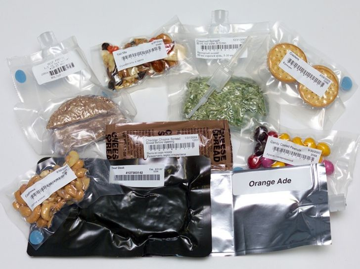

Developing food for space travel is often a complex process. Food must meet a number of criteria to be considered suitable for astronauts.
First, the food must be physiologically healthy. In particular, it must be nutritious, digestible and tasty.
Secondly, food must be designed for consumption in zero gravity. Products should be well packaged, easy to use and require minimal cleaning. Food should not leave crumbs (this is dangerous in zero gravity).
Finally, products should be as light as possible, store well, open easily and not leave a lot of debris after use.
